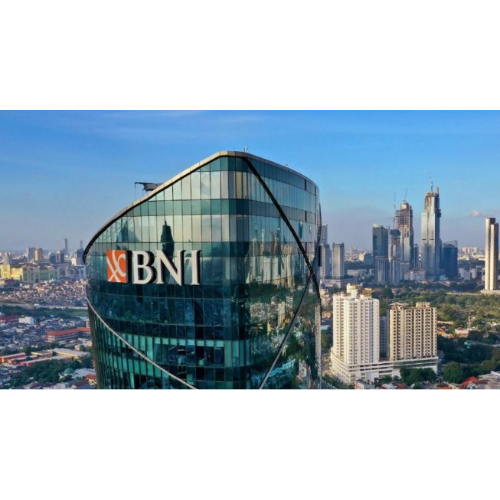

PT Bank Negara Indonesia (Persero), Tbk (selanjutnya disebut “BNI” atau “Bank”) pada awalnya didirikan di Indonesia sebagai Bank sentral dengan nama “Bank Negara Indonesia” berdasarkan Peraturan Pemerintah Pengganti Undang-Undang No. 2 tahun 1946 tanggal 5 Juli 1946. Selanjutnya, berdasarkan Undang-Undang No. 17 tahun 1968, BNI ditetapkan menjadi “Bank Negara Indonesia 1946”, dan statusnya menjadi Bank Umum Milik Negara. Selanjutnya, peran BNI sebagai Bank yang diberi mandat untuk memperbaiki ekonomi rakyat dan berpartisipasi dalam pembangunan nasional dikukuhkan oleh UU No. 17 tahun 1968 tentang Bank Negara Indonesia 1946.
Berdasarkan Peraturan Pemerintah No. 19 tahun 1992, tanggal 29 April 1992, telah dilakukan penyesuaian bentuk hukum BNI menjadi Perusahaan Perseroan Terbatas (Persero). Penyesuaian bentuk hukum menjadi Persero, dinyatakan dalam Akta No. 131, tanggal 31 Juli 1992, dibuat di hadapan Muhani Salim, S.H., yang telah diumumkan dalam Berita Negara Republik Indonesia No. 73 tanggal 11 September 1992 Tambahan No. 1A.
BNI merupakan Bank BUMN (Badan Usaha Milik Negara) pertama yang menjadi perusahaan publik setelah mencatatkan sahamnya di Bursa Efek Jakarta dan Bursa Efek Surabaya pada tahun 1996. Untuk memperkuat struktur keuangan dan daya saingnya di tengah industri perbankan nasional, BNI melakukan sejumlah aksi korporasi, antara lain proses rekapitalisasi oleh Pemerintah di tahun 1999, divestasi saham Pemerintah di tahun 2007, dan penawaran umum saham terbatas di tahun 2010.
Untuk memenuhi ketentuan Undang-Undang No. 40 tahun 2007 tanggal 16 Agustus 2007 tentang Perseroan Terbatas, Anggaran Dasar BNI telah dilakukan penyesuaian. Penyesuaian tersebut dinyatakan dalam Akta No. 46 tanggal 13 Juni 2008 yang dibuat di hadapan Fathiah Helmi, S.H., notaris di Jakarta, berdasarkan keputusan Rapat Umum Pemegang Saham Luar Biasa tanggal 28 Mei 2008 dan telah mendapat persetujuan dari Menteri Hukum dan Hak Asasi Manusia Republik Indonesia, dengan Surat Keputusan No. AHU-AH.01.02-50609 tanggal 12 Agustus 2008 dan telah diumumkan dalam Berita Negara Republik Indonesia No. 103 tanggal 23 Desember 2008 Tambahan No. 29015.
Perubahan terakhir Anggaran Dasar BNI dilakukan antara lain tentang penyusunan kembali seluruh Anggaran Dasar sesuai dengan Akta No. 35 tanggal 17 Maret 2015 Notaris Fathiah Helmi, S.H. telah mendapat persetujuan dari Menteri Hukum dan Hak Asasi Manusia Republik Indonesia, dengan surat keputusan No. AHU-AH.01.03-0776526 tanggal 14 April 2015.
Saat ini, 60% saham-saham BNI dimiliki oleh Pemerintah Republik Indonesia, sedangkan 40% sisanya dimiliki oleh masyarakat, baik individu maupun institusi, domestik dan asing. BNI kini tercatat sebagai Bank nasional terbesar ke-4 di Indonesia, dilihat dari total aset, total kredit maupun total dana pihak ketiga. Dalam memberikan layanan finansial secara terpadu, BNI didukung oleh sejumlah perusahaan anak, yakni Bank BNI Syariah, BNI Multifinance, BNI Sekuritas, BNI Life Insurance, BNI Ventures, BNI Remittance dan Bank Mayora.
BNI menawarkan layanan penyimpanan dana maupun fasilitas pinjaman baik pada segmen korporasi, menengah, maupun kecil. Beberapa produk dan layanan terbaik telah disesuaikan dengan kebutuhan nasabah sejak kecil, remaja, dewasa, hingga pensiun.